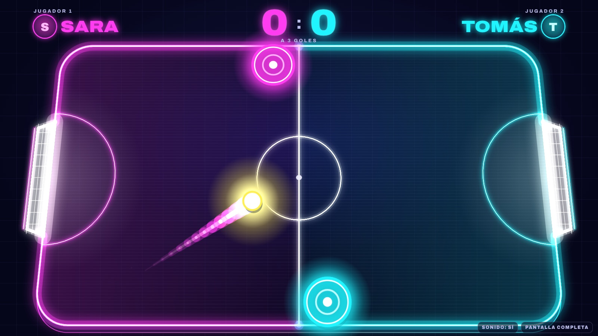
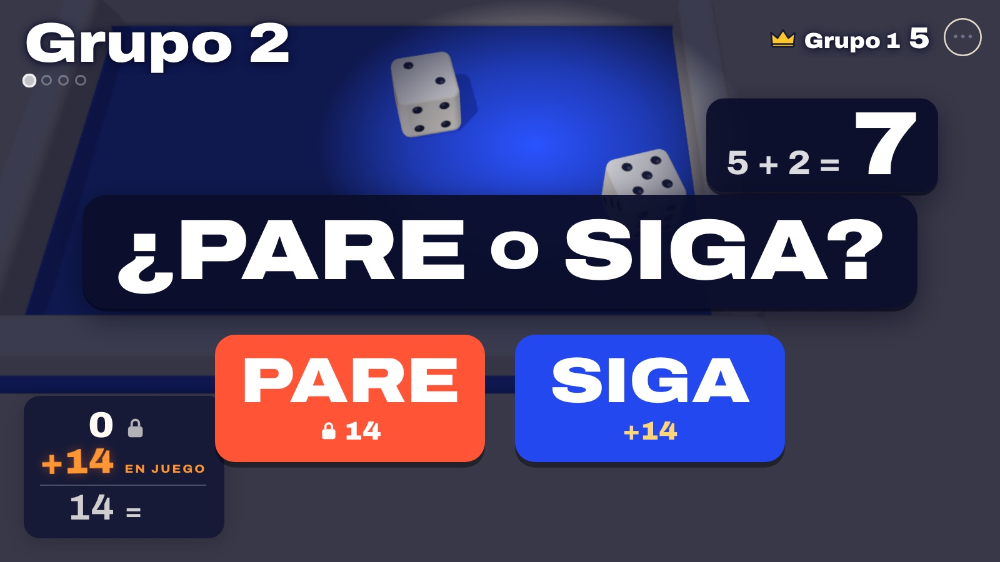

Gracias por la puntualidad
En breve comenzamos
Pensamiento
SENSORIAL
Hola. Como la clase pasada, hoy les preparé unos demos. Quiero que juguemos y reflexionemos sobre el alcance de la interfaz.


¿Y si fuera distinto?
¿Y si fuera distinto?
Reaccionar
Decidir
El mecanismo es solo un tramo
Alrededor de todo: el espacio y el contexto social.
El mecanismo permite hacer algo. La interfaz hace que ese algo signifique algo.
Revisión de prototipos
Intención ↔ efecto percibido
Primero alguien lo usa, sin explicación.
Después decimos qué produce.
Al final, el grupo dice qué buscaba.
No diseñamos solamente el gesto.
Diseñamos lo que el gesto pone en movimiento.